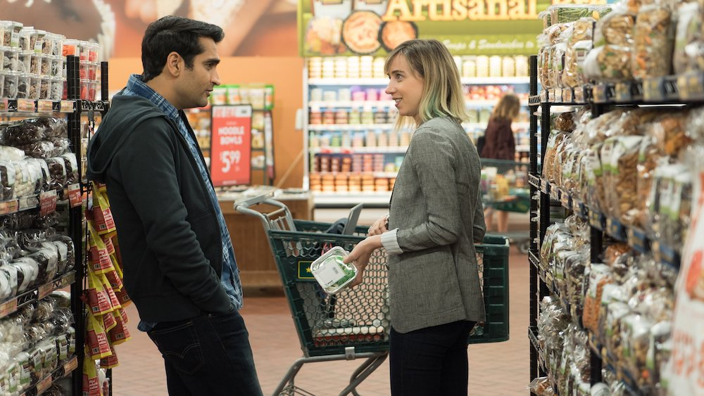

The Big Sick --- Romanticism between Love and Life
Autor: Raúl Gómez
Fecha: 07/11/2023
Hi, Romantic Comedy Genre, how have you been all this time? Your body remains the same; however, your face is different, nicer, and more ordinary. – Thanks, man. I’ve been doing stand-up, and I’ve learned some tricks: timing, gestures, how to be more genuine. Yeah, I'm ready to enjoy a second golden age.
'The Big Sick' adheres to the prior law of comedy: 'If it is authentic, it will be funnier.' Nanjiani brings us his own story with a correct dose of drama and one-liners for the right time in the right moment. Clichés and new staff laughs unite in this movie. This movie makes fun of itself like a comedian in the middle of the stage.
I have never had a Muslim girlfriend, but after I got up from the couch, I already know how meeting her and the troubles we probably would have been passing through. I have never lived in Chicago, but this comedy and drama work for my Spanish cultural background.
Romantic movies have fallen to the level of the average person: no more Anistons, Grants, or Diazs in our dreams; no more boorish drug/alcohol abusers with a master's in theoretical love and women's behavior supporting the star actors; no more runs at the airport; nevertheless, all of that with the same essence.
By the way, Ray Romano nails it: 'Love is when you cheat on someone and you realize she is the one.'